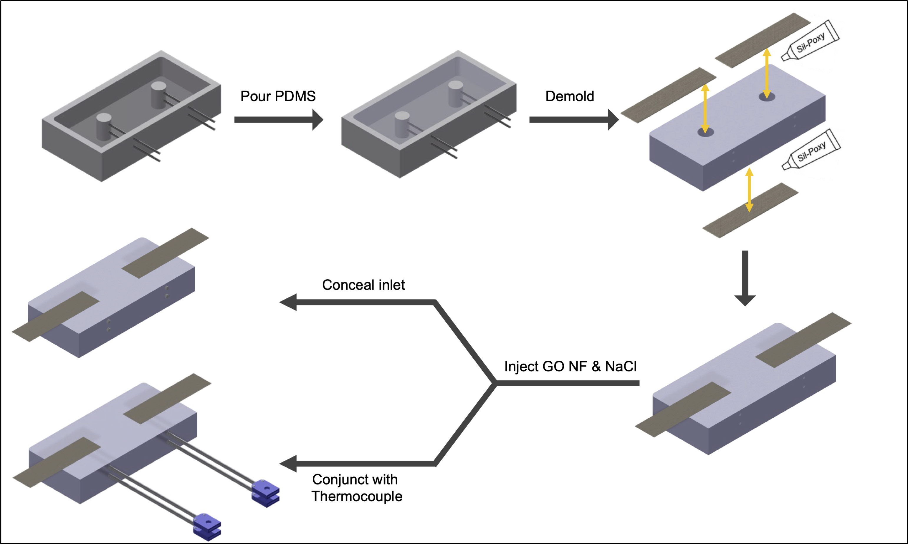
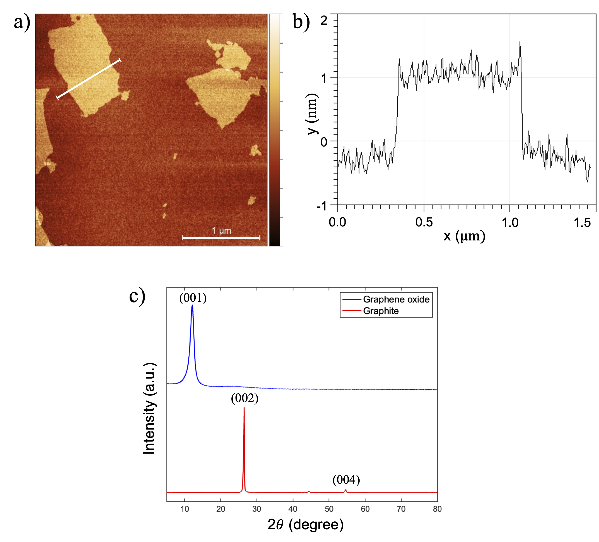
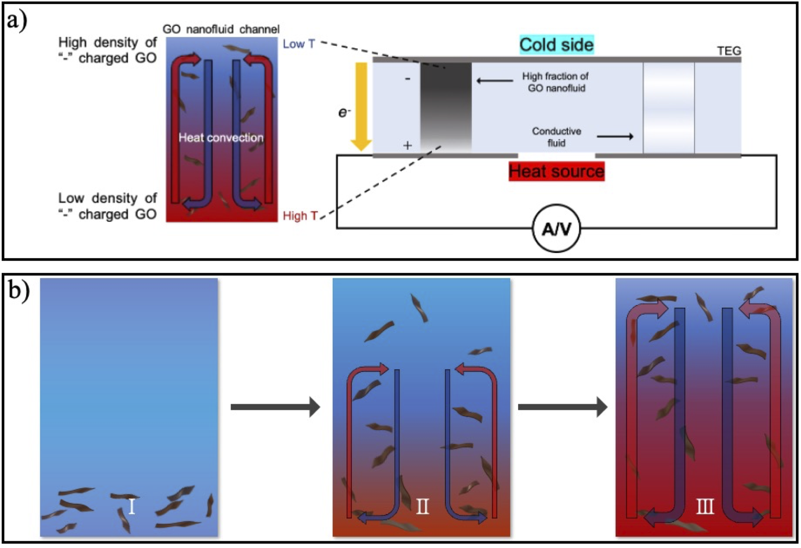
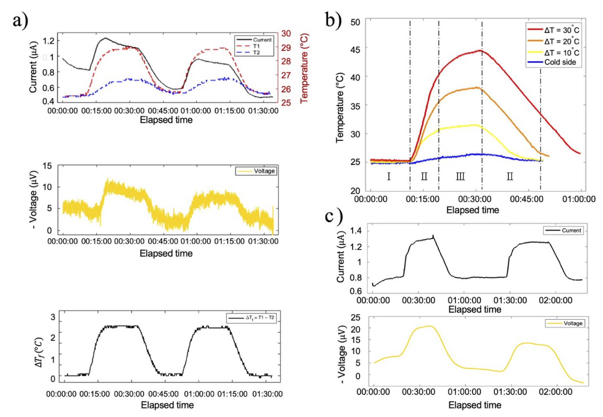
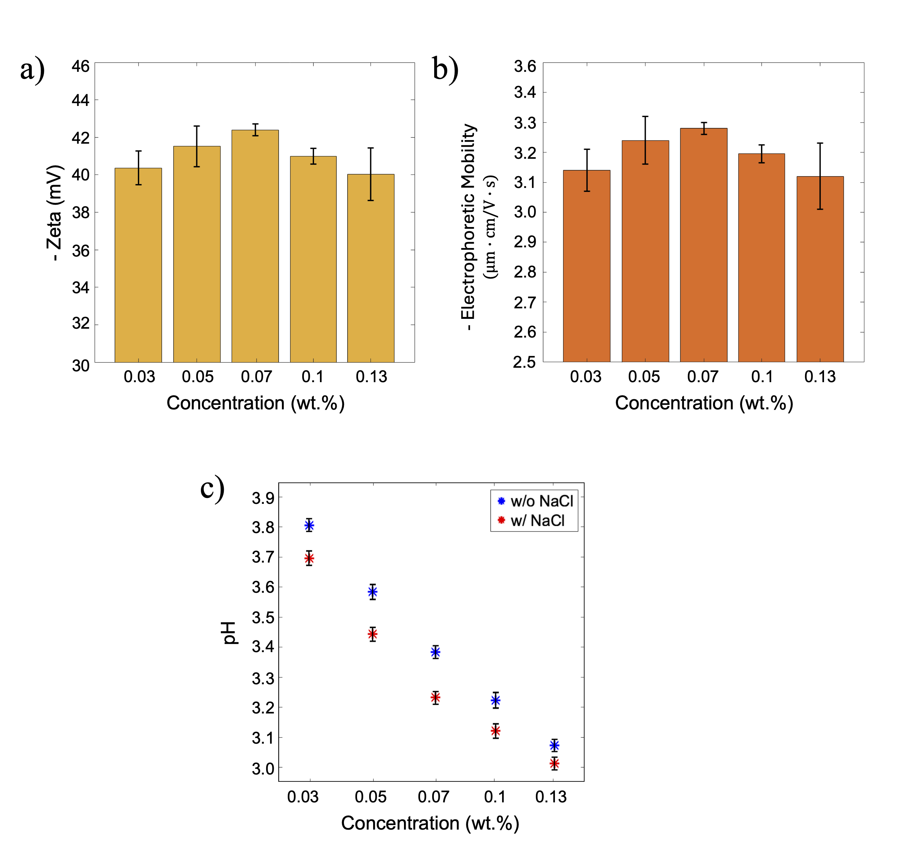
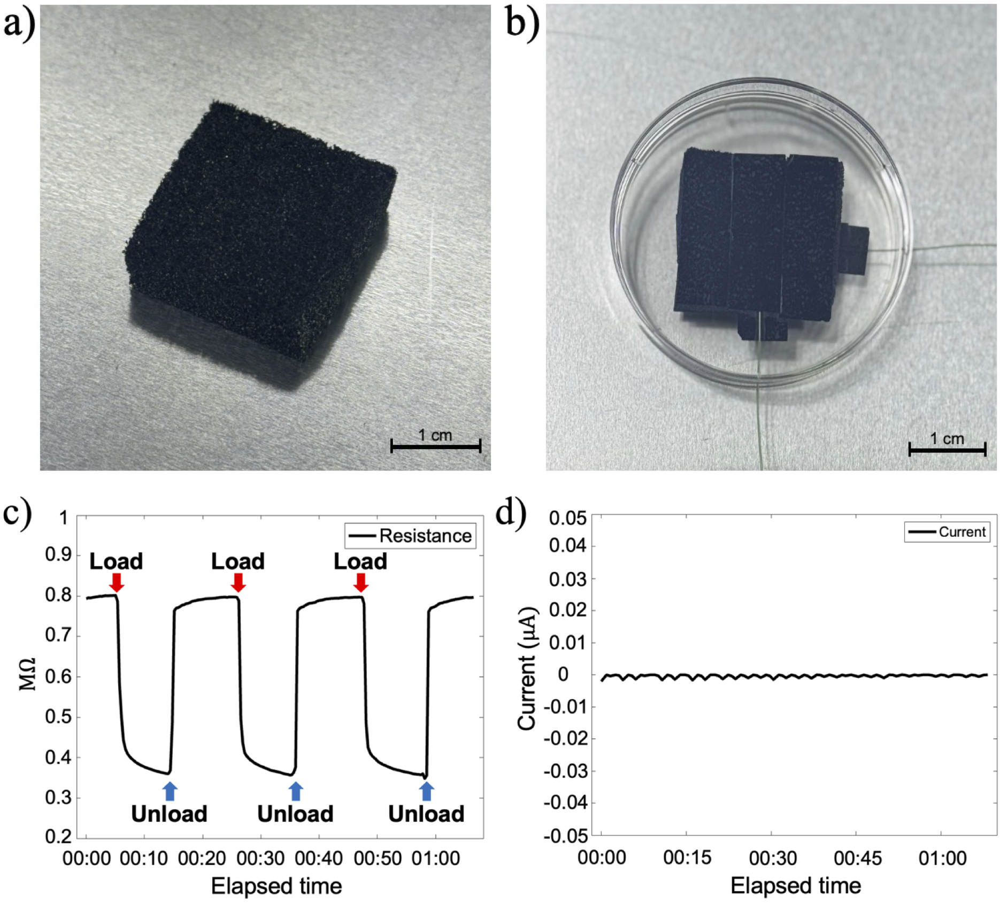
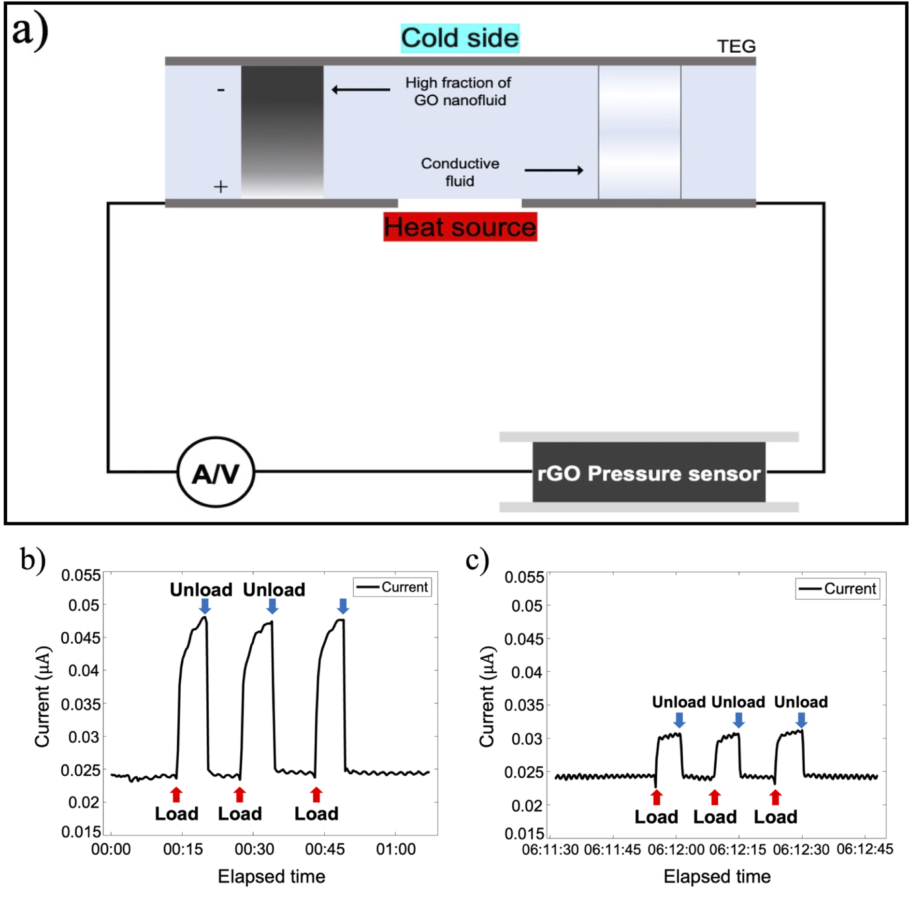

Energy harvesting · Nanofluids
Convection-Driven Thermoelectric Generation in Graphene Oxide Nanofluids
A temperature gradient across a graphene oxide (GO) nanofluid sets up natural convection that carries charged GO nanoparticles and dissociated protons toward the electrodes. The resulting current is enough to run a pressure sensor without any external power source.
Schematic of the proposed mechanism after Fig. 3 of the paper. As convection develops, GO becomes denser near the cold upper interface and sparser near the hot lower one, changing the local composition at each electrode–fluid interface; the bulk fluid stays electrically neutral. Readouts follow the reported ΔT = 10 °C and ≈ 0.5 μA but are illustrative.
Device
A nanofluid generator cast in a moldable body
Conventional thermoelectric generators rely on the Seebeck coefficient of solid materials. This device instead exploits convective transport in a graphene oxide nanofluid held in a polydimethylsiloxane (PDMS) body.
The PDMS body is cast in a 3D-printed mold (65 mm × 30 mm × 10 mm) with cylindrical reservoirs 6.5 mm in diameter and 10 mm high. One reservoir holds the GO nanofluid and the other an NaCl solution, forming an ionic thermoelectric couple.
Nickel tape seals the reservoirs. At the bottom it forms the external electrodes; at the top a single strip connects the two fluids, so the current path crosses four nickel–fluid interfaces in series.
Because the fluids are simply injected into a moldable body, the module is geometrically reconfigurable and can be reused by replacing only the fluids.

Materials
Why graphene oxide carries charge
GO nanoparticles carry a negative surface charge because their abundant oxygen functional groups, hydroxyl (–OH) and carboxyl (–COOH), readily ionize in water. In the nanofluid they therefore act as mobile, negatively charged carriers, and the protons they release lower the pH.
Atomic force microscopy confirms few-nanometre-thick GO sheets, and X-ray diffraction separates GO from its graphite precursor.

Mechanism
Convection, not thermodiffusion, moves the charge carriers
The device was analyzed in three domains of stepwise convection, the same sequence the animation above follows.
- Domain I. Both sides are at the same temperature. There is no convection, GO stays uniformly dispersed, and only the baseline current flows.
- Domain II. Heating one side starts partial convection, which transports the negatively charged GO. The current rises gradually.
- Domain III. Convection is fully developed, and the current saturates. Cooling returns the fluid to domain II, and the cycle repeats.
The convective redistribution of GO and dissociated protons changes the local composition, and hence the potentials, at the top and bottom electrode–fluid interfaces. Convection also delivers charged species to the interfaces and relieves concentration polarization there.
Thermophoresis alone would need about 90 days to build a concentration gradient over the 10 mm reservoir, far longer than a 20 min heating step. The paper presents this redistribution as a proposed mechanism; it was not observed directly.

Convection onset
A Rayleigh number check for the real reservoir
Each reservoir is a cylindrical fluid layer heated from below. Natural convection sets in once the Rayleigh number exceeds a critical value, which the side wall raises for a narrow cylinder (radius-to-height ratio 0.325).
Ra = g β ΔT L3 / (ν α)
The analysis indicates that natural convection can occur under the experimental conditions, particularly at ΔT = 10 °C, which was used for most measurements.
Electrical output
A reversible current that follows each heating step
At ΔT = 10 °C the short-circuit current rose by about 0.5 μA in each heating step and returned during cooling, cycle after cycle.
The current stayed above the baseline for the whole heating period instead of decaying, and the charge passed per step (about 0.6 mC) is roughly 200 times what the electrode double layers could store. Capacitive charging therefore cannot explain it.
A DI water–NaCl control showed only a small response that did not follow the heating–cooling cycles, so the ionic couple alone does not account for the change.

Concentration
Number density of charged GO sets the output
The main concentration was 0.07 wt%, chosen from zeta-potential data. Between 0.03 and 0.13 wt% the current change tended to grow with concentration.
Over that range the zeta potential changed by only about 6% while the GO concentration increased about fourfold. The charge carried to the interfaces is therefore governed mainly by the number of charged GO nanoparticles rather than the charge on each one. The pH also falls as concentration rises, reflecting more dissociated protons.

Self-powered sensing
Running a pressure sensor without a battery
A porous sponge dip-coated in GO and thermally reduced forms an rGO resistive pressure sensor. Its resistance changes under repeated loading with a 15 N weight (about 37.5 kPa over 20 mm × 20 mm), and on its own it generates no current.
Connected to the GO nanofluid generator, the sensor responds to pressure with no external power source, receiving about 0.5–0.8 nW.
Over 10 heating–cooling cycles the sensing response kept about 60% of its initial level, and it recovered fully once the fluids were replaced, which makes the module reusable.


Publication
Cite this work
Seongmin Hwang, Taehee Kim, Jongsuk Lee, Chanui Lee, Hyeonho Cho, Sangmin Lee, Sunghan Kim, “Temperature-gradient-induced colloidal transport for convection-driven energy harvesting in graphene oxide nanofluids,” International Communications in Heat and Mass Transfer 181, 113109 (2026).
Related patent: Sunghan Kim, Seongmin Hwang, Taehee Kim, Jongsuk Lee, “Self-powered integrated sensing device using graphene oxide nanofluid and method for manufacturing the same,” Korea Patent Application 10-2026-0007827, filed 2026 (pending).
More research